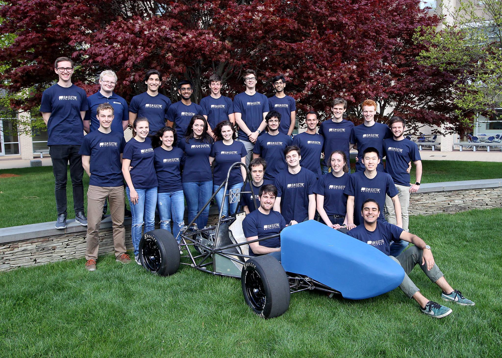

Olin Electric Motorsports
I've joined Olin Electric Motorsports on my first week at Olin and spent my first year designing the water cooling system. This year, I am part of a small team, trying to tackle one of the most complicated problems in vehicle dynamics: Suspension Geometry.
OEM Team 2016-2017 with Mk.II during the build season
Mk.II's endurance performance in FSAE Electric Lincoln. We raced more than 5 laps before needing to stop racing after a breaking a bolt in one of our suspension links. I designed the water cooling system for the motor and motor controller.
Towards the end of 2016-2017 build season, I worked in the assembly of different subsystems of the car. The difficulty of assembling the suspension system, the fact that the suspension geometry had never been optimized - which resulted in performance probelms in the competition - for or changed inception of OEM and the breaking bolt that forced us out of the competition inspired me to work on Mk.III's suspension this year.
A clip from our first drive day on the 2017-2018 season, with a finished Mk.II
Since August 2017, I've been researching about how to optimize our suspension geometry and working on Solidworks creating a dynamic model of our car - testing our design decisions in MSC's Adams Car software.
- Design: HTML5 UP